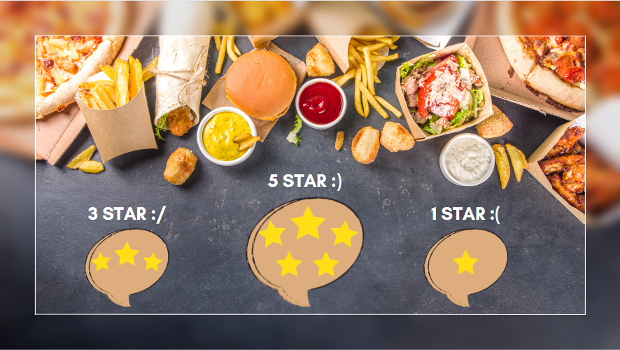

Latest Projects

"Welcome to my portfolio website! I am Jahnavi, a passionate B.Tech student specializing in Computer Science. Here, you'll find a showcase of my projects, demonstrating my proficiency in HTML, CSS, JavaScript."
Download RESUME"Welcome to my portfolio website! I am Jahnavi , a passionate B.Tech student specializing in Computer Science. Here, you'll find a showcase of my projects, demonstrating my proficiency in HTML, CSS, JavaScript, and React.js. As a campus ambassador for LetsUpgrade Company, I excel in communication and leadership, promoting initiatives and fostering community engagement. With a proactive approach and collaborative spirit, I thrive in team environments, eager to learn and contribute to impactful projects. Committed to continuous learning and exploring new technologies, I aspire to make meaningful contributions to the field of web development and beyond. Explore my portfolio to learn more about my journey and accomplishments!"
Read MoreFor building the front-end portion of websites and web applications—the part users see and interact with. A front-end developer creates websites and applications using web languages such as HTML, CSS, and JavaScript that allow users to access and interact with the site or app.
Thorough scanning of networks, servers, and applications to identify potential security weaknesses and misconfigurations. Prioritization of vulnerabilities based on severity and potential impact.
Sentiment analysis is the process of analyzing digital text to determine if the emotional tone of the message is positive, negative, or neutral.Sentiment analysis is often performed on textual data to help businesses monitor brand & product sentiment in customer feedback, & understand customer needs.